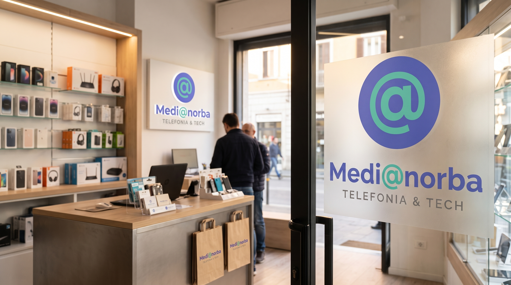
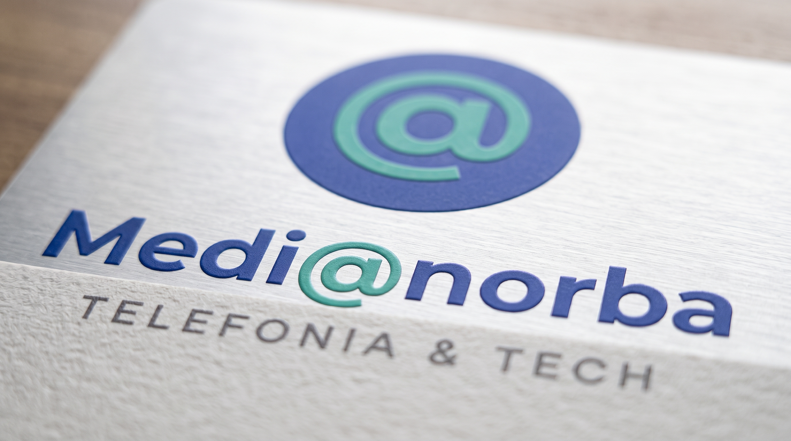
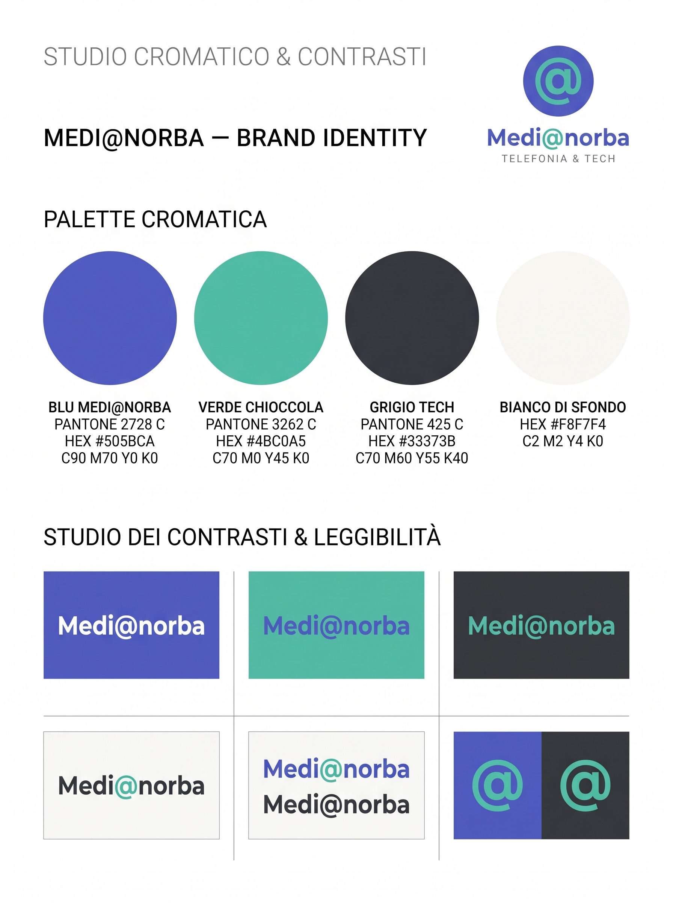
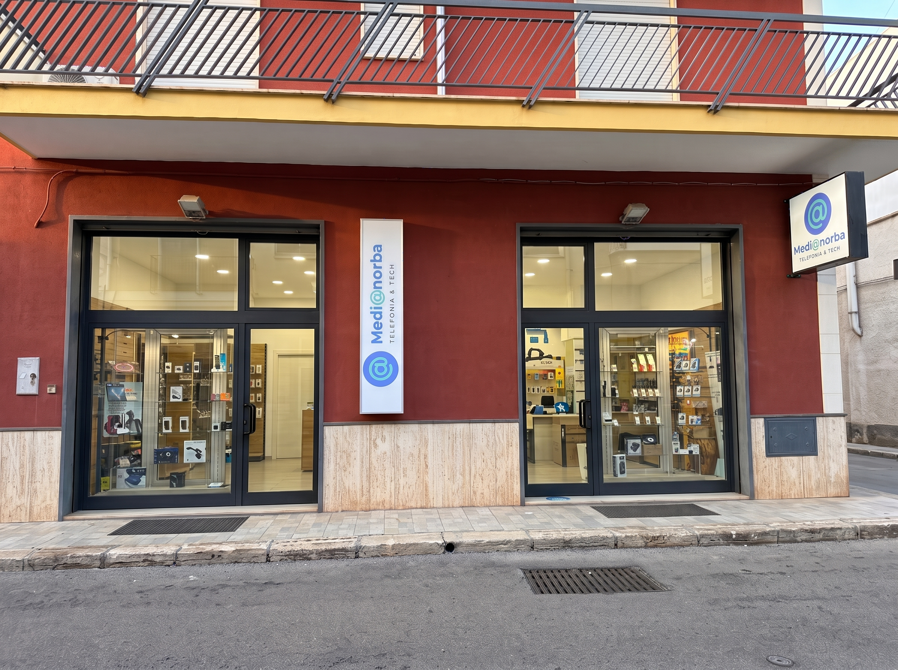
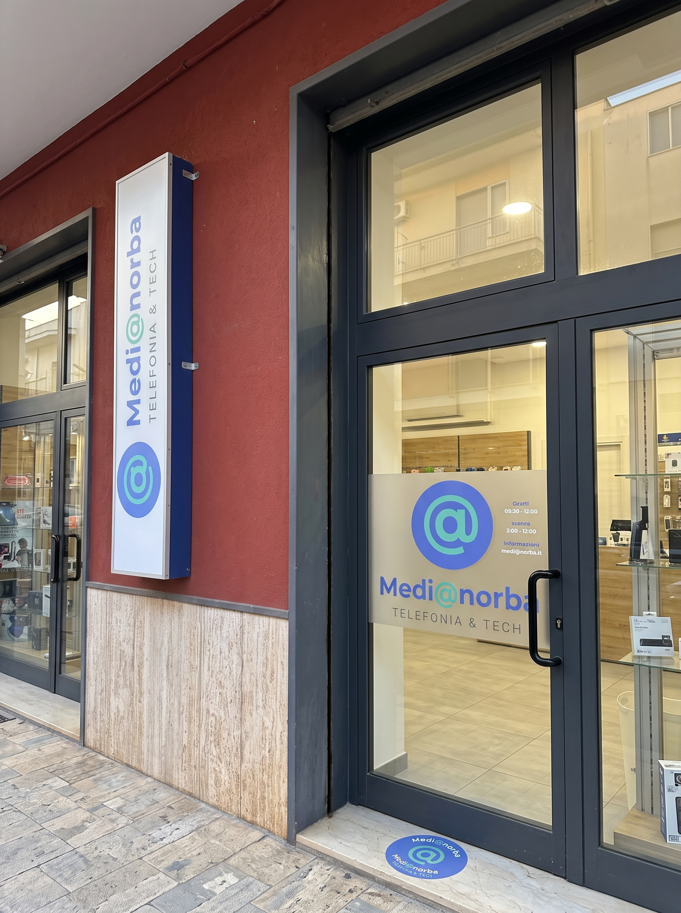
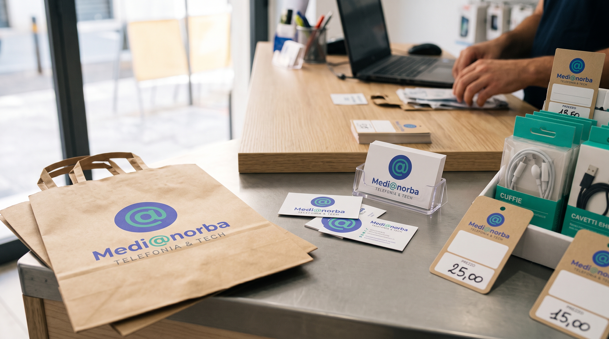

MEDI@NORBA
Un rinnovamento d'identità per un punto di riferimento nella vendita e assistenza tecnica di telefonia ed elettronica. Un logo dinamico con il simbolo «@» integrato nel lettering e un sistema completo di insegne e comunicazione fisica studiato per garantire massima leggibilità e impatto visivo su strada.



«La tecnologia incontra la prossimità: trasformare un'insegna in un punto di riferimento visivo chiaro, moderno e rassicurante per chi cerca assistenza e affidabilità.»


